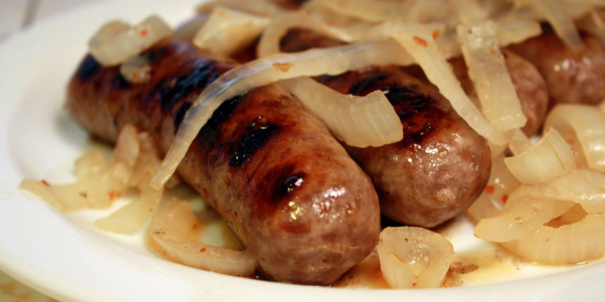

Mac and Cheese

Beer Brats
Juicy, beer-simmered brats
Ingredients
- 4 (12oz) cans beer
- 1 large onion, thinly sliced
- 10 bratwurst
- 2 tsp garlic powder
- 1 tsp salt
- 1/2 tsp ground black pepper
Directions
- Combine beer and onion slices in a large pot; bring to a boil. Add bratwurst, pepper flakes, garlic powder,
salt, and pepper. Reduce heat to medium and cook for 10 to 12 minutes.
- Meanwhile, preheat an outdoor grill for medium-high heat and lightly oil the grate.
- Remove bratwurst to a plate. Reduce heat to low and let onions simmer until needed.
- Cook bratwurst on the preheated grill, turning occasionally to get char marks, until no longer pink in the middle,
5 to 10 minutes. An instant-read thermometer inserted into the center should read at least 160 degrees F (70 degrees C).
- Serve bratwurst with onions.